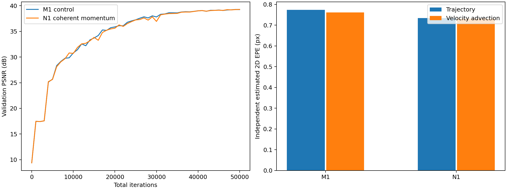
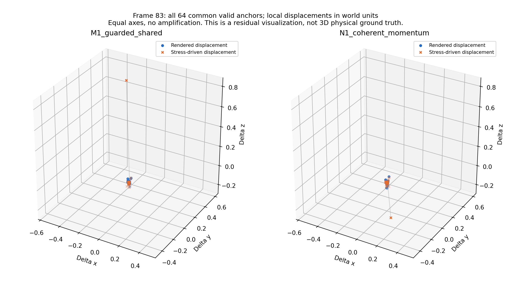
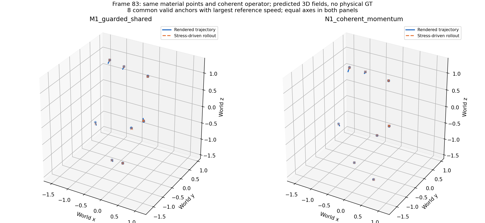

同一测试帧比较
默认原帧85；注意悬空鸭子仍有残影，不能只凭PSNR推断局部几何更准确。
M1
N1
重建质量接近、二维运动小幅改善；局部动量异常缓解，但未达综合物理改进门槛。
| 指标 | M1 | N1 |
|---|---|---|
| 测试 PSNR ↑ | 39.7018 dB | 39.9095 dB |
| 测试 LPIPS ↓ | 0.010624 | 0.010758 |
| 二维速度推进 EPE ↓ | 0.761089 px | 0.731806 px |
| 原动量算子残差中位数 ↓ | 119.157 | 115.870 |
| 新动量算子残差中位数 ↓ | 114.981 | 106.689 |
相同完整3k起点到总50k，单场景单种子。L1/M1原本已有共享轨迹；N1进一步统一离散时间区间和空间求导。三个固定时刻的残差中位数只改善2.76% / 7.21%，未达两算子均至少25%的预先标准。没有真实3D应力/动量真值。视频10fps仅为播放速度。
每段左侧GT、右侧Render。M1选49k，N1选50k；N1 best与final权重相同。
M1 对照
N1 统一离散动量
默认原帧85；注意悬空鸭子仍有残影，不能只凭PSNR推断局部几何更准确。
M1
N1

同一材料点、同一新算子、原训练帧83。下面覆盖全部64个共同有效锚点，使用相同坐标尺度，无人为放大。蓝色为渲染位移，橙色为应力驱动物理推进位移；灰线为差异。它是残差的可视化，不是独立3D真值验证。


完整分析报告 · 共同材料点双算子结果 · 求导敏感性 · 独立核验